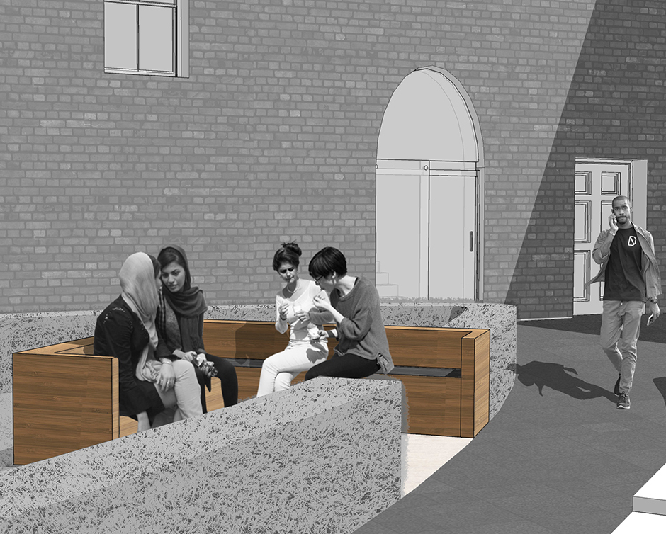
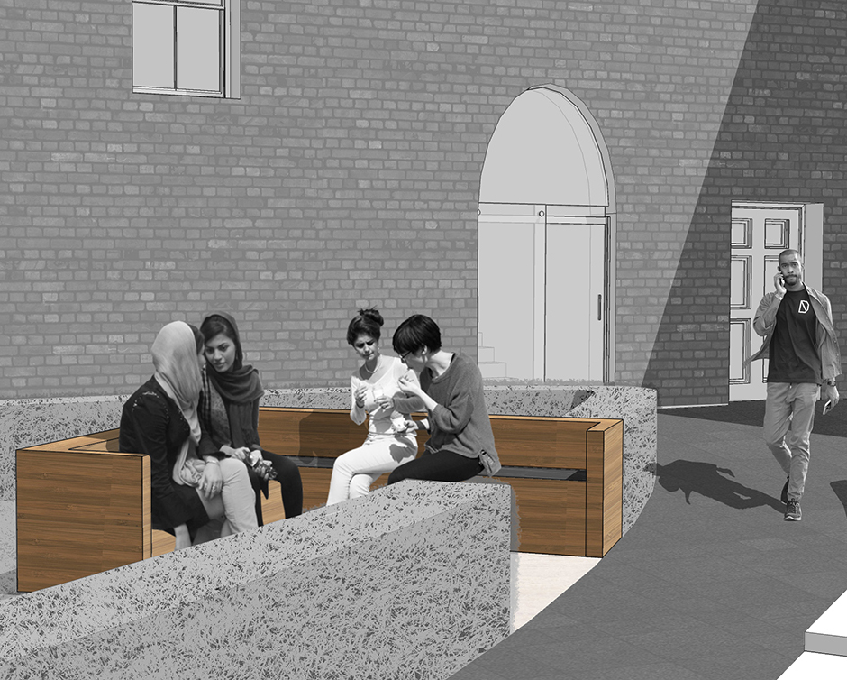

“Incredible! Three months for booking ”
Paul, Italian
Tripadivsor, 2016
“Underestimate and in a hurry. Leonardo deserves much more!”
Jane, Australian
Tripadvisor, 2016
“So beautiful but too short ”
Italian woman, 30 years old
during the visit
The painting was on a thin exterior wall so the effects of humidity were felt more keenly. Because of the method used, the painting was starting to flake at an early year of 1517.
A first restoration was attempted in 1726 by Michelangelo Bellotti, who filled in missing section with oil paint. This repair did not last well.
During World War II, on August 15, 1943, the refectory was sruck by Allied bombing; sandbagging prevented the painting from it.
The major restoration was guided by Brambilla Barcilon from 1978 to 1999. The refectory was converted to a sealed, climate-controlled environment. This change makes the room into a dark, less natural light space. After it was returned to display, considerable controversy was aroused by the dramatic changes in colors and some facial shapes.
Last Supper in 1970s
Last Supper in 1990s
Paul, Italian
Tripadivsor, 2016
Jane, Australian
Tripadvisor, 2016
Italian woman, 30 years old
during the visit
Exhibition
Cloister of Frogs
Bramante’s Sacristy
Sforza Castle
Pietà Rondanini


The goal of the before experience is to produce the engagement activity, provide a complete tool that prepares and inform visitors and make the booking process easy and quick. Thus, the information structure was redesigned. Advertising, website and an audioguide mobile app were designed as touchpoints.
Advertizement in city

Online ticket office
Steps to buy a ticket
The visitor will firstly step in the WELCOMING. Here they can collect information, free disposable headphones, brochures and the connection of the wifi. It is mandatory for everyone to leave their big bags here and people without app can get their audio guides.
In the rooms are placed beacons, devices that transmit information through bluetooth technology to smartphones.
In the room of LEONARDO’S STUDIES, we place ropes on the ceiling, recreate the perspective effect. Silhouette the characters on the wall. In the Last Supper Leonardo used the one-point perspective, which the artist had recovered from the treatises of Leon Battista Alberti and Vitruvius. From the center of Jesus starts all the lines that converge in a perspective structure.

In the room of MOMENT OF CREATION, different videos are projected directly on the wall. Leonardo used to prepare the natural colors before starting to paint. Colors were realized in fat tempera, powder color pigment dissolved in a mixture, adding eggs, casein and other organic substances, capable of producing effects of soft compactness and a translucent paint film, unlike the tempera in water and the fresco.
In the room of FLUCTUATION, portions of the painting are placed on the wall to show the process of deterioration and the various restorations done during the years. Once Leonardo finished the artwork, he immediately noticed that the technique used shows its serious flaws. It was only the beginning of a long process of deterioration that would continue inexorably over time.

In the main room of LAST SUPPER, the refectory becomes a theatre: an artificial light, that simulates the natural one, like Leonardo depicted, highlights the paintings. There is the explanation of the masterpiece, with particular emphasis on enjoyment from afar. Comparison with the technique used by Montorfano in the painting placed in the opposite side of the refectory.

In the room after the main one, as called IN TOUCH, here visitors have the possibility to be close to the painting; they can interact and feel the matter. Through Didù technique it is possible to outline volumes, reproduce compactness, materials, and reliefs. Differently to the previous room, the refectory, where the visitor is led to discover the details of the painting through the physical interaction with the installation.

In DIGITAL FUTURE, on the wall, there is a digital screen that responds to the visitors’ touch. Reflection on the need to digitize our heritage to facilitate the contextualization in the historical and cultural landscape in which he was born. Virtual reality is used not only as a tool for knowledge, but also as a lever for development and growth.

When the visit is over, people can go to the book shop/cafeteria or enjoy the garden, its natural outdoor extension. These spaces work also as waiting areas before the visit.
 

The booking system offers different kinds of tickets and other programs:
- Last Supper + Leonardo’s vineyard
- Last Supper + SMG tour (church, cloister, Bramante’s sacrysty)
- Last Supper + aperitivo
EDUCATIONAL PROGRAMS
Lab for kids, families, schools
EVENTS / EXHIBITIONS